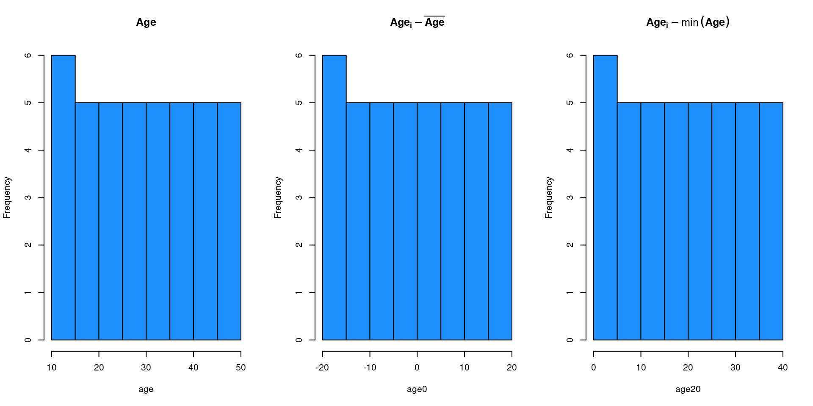

k <- 100
n <- 10 + rpois(k, 40 - 10)
exp <- rep(c("lab", "online"), each = k/2)Meta-regression
Psicometria per le Neuroscienze Cognitive
Filippo Gambarota, PhD
Meta-analysis as (weighted) linear regression
MA as (weighted) linear regression
Both the EE and RE model can be seen as standard (weighted) linear regression models. Precisely, there is a difference in fitting a meta-analysis using lm or lme4::lmer() and rma (see https://www.metafor-project.org/doku.php/tips:rma_vs_lm_lme_lmer).
Beyond these differences a general the EE and RE models are intercept-only linear regressions.
\[ \boldsymbol{Y} = \mathbf{X}\boldsymbol{\beta} + \boldsymbol{\epsilon} \]
The EE model:
\[ y_i = \beta_0 + \epsilon_i \]
The RE model:
\[ y_i = \beta_0 + \beta_{0_i} + \epsilon_i \]
MA as (weighted) linear regression
In the EE model \(\beta_0\) is \(\theta\) and \(\epsilon_i \sim \mathcal{N}(0, \sigma^2_i)\)
\[ y_i = \beta_0 + \epsilon_i \]
In the RE model \(\beta_0\) is \(\mu_{\theta}\) and \(\beta_{0_i}\) are the \(\delta_i\).
Explaining \(\tau^2\)
So far we simply assumed \(\tau^2 = 0\) (for the EE model) or estimated it using the RE model.
We can extend the intercept-only meta-analysis by including study-level predictors (as in standard linear regression) to explain the estimated true heterogeneity.
Explaining \(\tau^2\)
Let’s make an example where we simulate a meta-analysis with \(k = 100\) studies. Beyond the effect size, we extracted an experimental condition where 50 studies where lab-based experiments \(x_{lab}\) and 50 studies where online experiments.
We assume that there could be a lab effect thus we included a predictor in the model.
Explaining \(\tau^2\)
Now the model have a predictor \(x\) (the type of experiment) and two parameters \(\beta_0\) and \(\beta_1\). Depending on the contrast coding (default to contr.treatment() in R) the \(\beta_0\) is different. Coding exp as 0 for lab-based experiments and 1 for online experiments:
\[ y_i = \beta_0 + \beta_1X_{1_i} + \epsilon_i \]
\[ y_{\text{lab}_i} = \beta_0 + \epsilon_i \]
\[ y_{\text{online}_i} = \beta_0 + \beta_1 + \epsilon_i \]
Explaining \(\tau^2\)
What is missing is the random-effect. Basically we still have \(\tau^2\) determining the \(\delta_i \sim \mathcal{N}(0, \tau^2)\) but now is the residual \(\tau^2_r\). The heterogeneity after including the predictor.
\[ y_i = \beta_0 + \beta_{0_i} + \beta_1X_{1_i} + \epsilon_i \qquad(1)\]
\[ \beta_{0_i} \sim \mathcal{N}(0, \tau^2_r) \]
Clearly the difference between \(\tau^2\) (the total heterogeneity) and \(\tau^2_r\) (residual heterogeneity) is an index of the impact of \(X\).
Simulating the \(X\) effect
To simulate a meta-regression we just need to choose the parameters values (\(\beta_0\) and \(\beta_1\)) and implement Equation 1. Using treatment coding, \(\beta_0\) is the effect size when \(X = 0\) (i.e., lab-based experiments) and \(\beta_1\) is the difference between lab and online experiments.
b0 <- 0.3 # lab-based effect size
b1 <- 0.5 # online - lab-based --> online = b0 + b1
exp_dummy <- ifelse(exp == "lab", 0, 1) # dummy version
es <- b0 + b1 * exp_dummy
ht(data.frame(exp, exp_dummy, es))
#> exp exp_dummy es
#> 1 lab 0 0.3
#> 2 lab 0 0.3
#> 3 lab 0 0.3
#> 4 lab 0 0.3
#> 5 lab 0 0.3
#> 95 online 1 0.8
#> 96 online 1 0.8
#> 97 online 1 0.8
#> 98 online 1 0.8
#> 99 online 1 0.8
#> 100 online 1 0.8Simulating the \(X\) effects
Now we can use the sim_studies() function as usual. The difference is that es is no longer a single value but a vector (with different values according to the \(X\) level) and tau2 is \(\tau^2_r\) (this the leftover heterogeneity after including the \(X\) effect)
tau2r <- 0.05 # residual heterogeneity
dat <- sim_studies(k = k, es = es, tau2 = tau2r, n1 = n, add = list(exp = exp))
ht(dat)
#>
#> id yi vi n1 n2 exp
#> 1 1 0.4809 0.0504 36 36 lab
#> 2 2 0.2216 0.0385 46 46 lab
#> 3 3 0.6249 0.0733 29 29 lab
#> 4 4 0.3596 0.0484 36 36 lab
#> 5 5 -0.3642 0.0353 60 60 lab
#> 95 95 0.2620 0.0439 41 41 online
#> 96 96 0.7063 0.0661 35 35 online
#> 97 97 0.2812 0.0549 36 36 online
#> 98 98 0.7043 0.0537 41 41 online
#> 99 99 0.6778 0.0582 37 37 online
#> 100 100 0.6097 0.0550 35 35 onlineFitting a meta-regression Model
To fit a meta-regression we still use the metafor::rma() function, adding the mods = ~ parameter with the model formula (same as the right-hand side of a y ~ x call in lm). The name of the predictor in the formula need to match a column of the data = dataframe.
fit <- rma(yi, vi, mods = ~ exp, data = dat, method = "REML")
summary(fit)
#>
#> Mixed-Effects Model (k = 100; tau^2 estimator: REML)
#>
#> logLik deviance AIC BIC AICc
#> -20.2793 40.5587 46.5587 54.3136 46.8140
#>
#> tau^2 (estimated amount of residual heterogeneity): 0.0369 (SE = 0.0126)
#> tau (square root of estimated tau^2 value): 0.1922
#> I^2 (residual heterogeneity / unaccounted variability): 41.96%
#> H^2 (unaccounted variability / sampling variability): 1.72
#> R^2 (amount of heterogeneity accounted for): 66.76%
#>
#> Test for Residual Heterogeneity:
#> QE(df = 98) = 168.1380, p-val < .0001
#>
#> Test of Moderators (coefficient 2):
#> QM(df = 1) = 84.6513, p-val < .0001
#>
#> Model Results:
#>
#> estimate se zval pval ci.lb ci.ub
#> intrcpt 0.2357 0.0420 5.6173 <.0001 0.1535 0.3180 ***
#> exponline 0.5488 0.0596 9.2006 <.0001 0.4319 0.6657 ***
#>
#> ---
#> Signif. codes: 0 '***' 0.001 '**' 0.01 '*' 0.05 '.' 0.1 ' ' 1Intepreting a meta-regression Model
The output is similar to the RE model with few additions:
- Everything related to the heterogeneity (\(H^2\), \(I^2\), \(Q\), etc.) is now about residual heterogeneity
- There is the (pseudo) \(R^2\)
- There is an overall test for the moderators \(Q_M\)
- There is a section (similar to standard regression models) with the estimated parameters, standard error and Wald test
Model parameters
intrcpt and exponline are the estimates of \(\beta_0\) and \(\beta_1\). The interpretation depends on the scale of the effect size and the contrast coding.
We can plot the model results using the metafor::regplot()1.

Omnibus Moderator Test
The Test of Moderators section report the so-called omnibus test for model coeffiecients. Is a simultaneous test for 1 or more coefficients where \(H_0: \beta_j = 0\).
In this case, coefficient 2 means that we are testing only the 2nd coefficient \(\beta_1\). By default, the intercept is ignored. In fact, the exponline line and the omnibus test are the same (the \(\chi^2\) is just the \(z^2\))
#> Test of Moderators (coefficient 2):
#> QM(df = 1) = 84.6513, p-val < .0001
#> estimate se zval pval ci.lb ci.ub
#> intrcpt 0.2357 0.0420 5.6173 <.0001 0.1535 0.3180 ***
#> exponline 0.5488 0.0596 9.2006 <.0001 0.4319 0.6657 ***General Linear Hypotheses Testing (GLHT)
We can also test any combination of parameters. For example we could test if lab-based experiments and online experiments are both different from 0. This is the same as fitting a model without the intercept1 thus estimating the cell means (see Schad et al. 2020).
General Linear Hypotheses Testing (GLHT)
fit_no_int
#>
#> Mixed-Effects Model (k = 100; tau^2 estimator: REML)
#>
#> tau^2 (estimated amount of residual heterogeneity): 0.0369 (SE = 0.0126)
#> tau (square root of estimated tau^2 value): 0.1922
#> I^2 (residual heterogeneity / unaccounted variability): 41.96%
#> H^2 (unaccounted variability / sampling variability): 1.72
#>
#> Test for Residual Heterogeneity:
#> QE(df = 98) = 168.1380, p-val < .0001
#>
#> Test of Moderators (coefficients 1:2):
#> QM(df = 2) = 374.2227, p-val < .0001
#>
#> Model Results:
#>
#> estimate se zval pval ci.lb ci.ub
#> explab 0.2357 0.0420 5.6173 <.0001 0.1535 0.3180 ***
#> exponline 0.7845 0.0424 18.5113 <.0001 0.7014 0.8676 ***
#>
#> ---
#> Signif. codes: 0 '***' 0.001 '**' 0.01 '*' 0.05 '.' 0.1 ' ' 1General Linear Hypotheses Testing (GLHT)
A more elegant way is by using the GLHT framework. Basically we provide a contrast matrix expressing linear combinations of model parameters to be tested. In our case \(\text{lab} = \beta_0 = 0\) and \(\text{online} = \beta_0 + \beta_1 = 0\).
Practically, the matrix formulation is the following:
\[ \begin{pmatrix} 1 & 0 \\ 1 & 1 \end{pmatrix} \begin{pmatrix} \beta_0\\ \beta_1 \end{pmatrix} = \begin{pmatrix} 0\\ 0 \end{pmatrix} \]
In R:
General Linear Hypotheses Testing (GLHT)
We can use the anova() function providing the model and the hypothesis matrix.
anova(fit) # the default
#>
#> Test of Moderators (coefficient 2):
#> QM(df = 1) = 84.6513, p-val < .0001
anova(fit, X = C)
#>
#> Hypotheses:
#> 1: intrcpt = 0
#> 2: intrcpt + exponline = 0
#>
#> Results:
#> estimate se zval pval
#> 1: 0.2357 0.0420 5.6173 <.0001 ***
#> 2: 0.7845 0.0424 18.5113 <.0001 ***
#>
#> Omnibus Test of Hypotheses:
#> QM(df = 2) = 374.2227, p-val < .0001Notice that is the same as the model without the intercept.
Likelihood Ratio Test (LRT)
As in standard regression modelling, we can also compare models using LRT. The anova() function will compute the LRT when two (nested) models are provided. In this case we compared a null (intercept-only) model with the model including the predictor.
# the null model
fit0 <- rma(yi, vi, data = dat, method = "REML")
anova(fit0, fit, refit = TRUE) # refit = TRUE because LRT with REML is not meaningful, using ML instead
#>
#> df AIC BIC AICc logLik LRT pval QE tau^2
#> Full 3 45.3744 53.1899 45.6244 -19.6872 168.1380 0.0352
#> Reduced 2 105.8863 111.0966 106.0100 -50.9431 62.5118 <.0001 314.8233 0.1095
#> R^2
#> Full
#> Reduced 67.8604%\(R^2\)
The \(R^2\) value reported in the model output is not calculated as in standard regression analysis.
\[ R^2 = 1 - \frac{\tau^2_r}{\tau^2} \]
Basically is the percentage of heterogeneity reduction from the intercept-only model to the model including predictors.
In R:
\(R^2\)
Despite useful, the \(R^2\) has some limitations:
- López-López et al. (2014) showed that precise estimations require a large number of studies \(k\)
- Sometimes could results in negative values (usually truncated to zero)
- Depends on the \(\tau^2\) estimator
More about \(R^2\) and limitations can be found:
Numerical predictor
The same logic of simulating a meta-regression can be applied to numerical predictors. We still have \(\beta_0\) and \(\beta_1\) but \(X\) has more levels. Let’s simulate an impact of the average participants’ age on the effect size.
- \(\beta_0\) is the effect size when age is zero
- \(\beta_1\) is the expected increase in the effect size for a unit increase in
age
How we can choose plausible values for the parameters and parametrize the model correctly?
Parametrize \(\beta_0\)
The intepretation (and the inference) of \(\beta_0\) is strongly dependent on the type of numerical predictor. An age of zero is (probably) empirically meaningless thus the \(\beta_0\) is somehow not useful.
We can for example mean-center (or other type of centering procedure) moving the zero on a meaningful value.
age <- 10:50 # the raw vector
age0 <- age - mean(age) # centering on the mean
age20 <- age - min(age) # centering on the minimum
ht(data.frame(age, age0, age20))
#> age age0 age20
#> 1 10 -20 0
#> 2 11 -19 1
#> 3 12 -18 2
#> 4 13 -17 3
#> 5 14 -16 4
#> 36 45 15 35
#> 37 46 16 36
#> 38 47 17 37
#> 39 48 18 38
#> 40 49 19 39
#> 41 50 20 40Parametrize \(\beta_0\)
Parametrize \(\beta_0\)
Using different parametrizations will only affect the estimation (and the interpretation) of \(\beta_0\). Other parameters and indexes will be the same.
k <- 100
b0 <- 0.2 # effect size when age 0
b1 <- 0.05 # slope (random for now)
age <- round(runif(k, 20, 50)) # sampling from uniform distribution
tau2r <- 0.05
n <- 10 + rpois(k, 30 - 10)
es <- b0 + b1 * age # raw
age0 <- age - mean(age)
age20 <- age - 20
dat <- sim_studies(k = k, es = es, tau2 = tau2r, n1 = n, add = list(age = age, age0 = age0, age20 = age20))
fit <- rma(yi, vi, mods = ~ age, data = dat)
fit0 <- rma(yi, vi, mods = ~ age0, data = dat)
fit20 <- rma(yi, vi, mods = ~ age20, data = dat)
# showing the intercept
compare_rma(fit, fit0, fit20, extra_params = "R2") |>
round(3)
#> fit: rma(yi = yi, vi = vi, mods = ~age, data = dat)
#> fit0: rma(yi = yi, vi = vi, mods = ~age0, data = dat)
#> fit20: rma(yi = yi, vi = vi, mods = ~age20, data = dat)
#> fit fit0 fit20
#> b (intrcpt) 0.155 1.963 1.190
#> se 0.164 0.039 0.078
#> zval 0.947 50.555 15.241
#> pval 0.344 0.000 0.000
#> ci.lb -0.166 1.887 1.037
#> ci.ub 0.476 2.040 1.342
#> R2 68.810 68.810 68.810
#> I2 58.854 58.854 58.854
#> tau2 0.087 0.087 0.087
# showing the intercept
compare_rma(fit, fit0, fit20, b = "age", extra_params = "R2") |>
round(3)
#> fit: rma(yi = yi, vi = vi, mods = ~age, data = dat)
#> fit0: rma(yi = yi, vi = vi, mods = ~age0, data = dat)
#> fit20: rma(yi = yi, vi = vi, mods = ~age20, data = dat)
#> fit fit0 fit20
#> b (age) 0.052 0.052 0.052
#> se 0.005 0.005 0.005
#> zval 11.340 11.340 11.340
#> pval 0.000 0.000 0.000
#> ci.lb 0.043 0.043 0.043
#> ci.ub 0.061 0.061 0.061
#> R2 68.810 68.810 68.810
#> I2 58.854 58.854 58.854
#> tau2 0.087 0.087 0.087Choosing \(\beta_1\)
The core of the model is \(\beta_1\) that is the age effect. Compared to the categorical case where \(\beta_1\) is just the standardized difference between two conditions, with numerical \(X\) choosing a meaningful \(\beta_1\) is more challenging.
Two (maybe more) strategies:
- simulating a lot of effects sizes fixing \(beta_0\) and \(\beta_1\) and see the expected range of \(y_i\)
- fixing a certain \(R^2\) and choose the \(\beta_1\) producing that \(R^2\)
- …
\(\beta_1\) by simulations
A strategy could be to simulate from the generative model a large number of studies and see the expected range of effect size (Gelman, Hill, and Vehtari 2020, chap. 5 and p. 97). A large number of unplausible values suggest that the chosen \(\beta_1\) is probably not appropriate.
k <- 1e3
n <- 30
tau2 <- 0
x <- runif(k, 20, 50) # age
b0 <- 0.1
b1 <- c(0.001, 0.05, 0.2)
esl <- lapply(b1, function(b) b0 + b*x)
datl <- lapply(esl, function(es) sim_studies(k = k, es = es, tau2 = tau2, n1 = n, add = list(x = x)))
names(datl) <- b1
dat <- dplyr::bind_rows(datl, .id = "b1")
ht(dat)
#>
#> b1 id yi vi n1 n2 x
#> 1 0.001 1 0.0249 0.0743 30 30 39.41982
#> 2 0.001 2 0.3599 0.0850 30 30 24.53982
#> 3 0.001 3 0.1112 0.0552 30 30 47.02552
#> 4 0.001 4 0.3305 0.0705 30 30 42.67976
#> 5 0.001 5 0.0313 0.0537 30 30 37.48619
#> 2995 0.2 995 9.5151 0.0613 30 30 47.89667
#> 2996 0.2 996 4.9303 0.0749 30 30 23.45822
#> 2997 0.2 997 9.4805 0.0696 30 30 45.64827
#> 2998 0.2 998 7.3192 0.0603 30 30 36.08561
#> 2999 0.2 999 5.0941 0.0863 30 30 24.74852
#> 3000 0.2 1000 5.8356 0.0882 30 30 28.56949\(\beta_1\) by simulations
Clearly given the limited range of the \(x\) variable (age) some \(\beta_1\) values are implausible leading to effect sizes that are out of a meaningful empirical range.
Fixing \(R^2\)
We can use the approach by López-López et al. (2014) where predictors \(x\) are sampled from a standard normal distribution (or standardized). \(\beta_1\) is calculated as \(\beta_1 = \sqrt{\tau^2 R^2}\) and the residual heterogeneity as \(\tau^2_r = \tau^2 - \beta^2_1\).
Fixing \(R^2\)
We can check the simulation approach:
k <- 1e3
1 - tau2r/tau2
#> [1] 0.4
x <- rnorm(k)
es <- b0 + b1 * x
dat <- sim_studies(k, es, tau2r, n1 = 1e3, add = list(x = x))
fit <- rma(yi, vi, data = dat, mods = ~x)
summary(fit)
#>
#> Mixed-Effects Model (k = 1000; tau^2 estimator: REML)
#>
#> logLik deviance AIC BIC AICc
#> -547.4249 1094.8498 1100.8498 1115.5671 1100.8740
#>
#> tau^2 (estimated amount of residual heterogeneity): 0.1734 (SE = 0.0079)
#> tau (square root of estimated tau^2 value): 0.4164
#> I^2 (residual heterogeneity / unaccounted variability): 98.86%
#> H^2 (unaccounted variability / sampling variability): 87.86
#> R^2 (amount of heterogeneity accounted for): 41.74%
#>
#> Test for Residual Heterogeneity:
#> QE(df = 998) = 87658.6376, p-val < .0001
#>
#> Test of Moderators (coefficient 2):
#> QM(df = 1) = 708.4432, p-val < .0001
#>
#> Model Results:
#>
#> estimate se zval pval ci.lb ci.ub
#> intrcpt 0.1000 0.0133 7.5463 <.0001 0.0740 0.1260 ***
#> x 0.3474 0.0131 26.6166 <.0001 0.3219 0.3730 ***
#>
#> ---
#> Signif. codes: 0 '***' 0.001 '**' 0.01 '*' 0.05 '.' 0.1 ' ' 1\(R^2\) using simulations
The results from López-López et al. (2014) (and also our previous simulation) suggested that we need a large number of studies for precise \(R^2\) estimations. Let’s check using simulations the sampling distribution of \(R^2\) using a plausible meta-analysis scenario.
k <- 40 # number of studies
n <- 10 + rpois(k, 40 - 10) # sample size
tau2 <- 0.05 # tau ~ 0.22
R2 <- 0.3
b0 <- 0.1
b1_2 <- tau2 * R2
b1 <- sqrt(b1_2)
tau2r <- tau2 - b1_2
nsim <- 1e3
R2i <- rep(NA, nsim)
for(i in 1:nsim){
x <- rnorm(k)
dat <- sim_studies(k = k, es = b0 + b1*x, tau2 = tau2r, n1 = n, add = list(x))
fit <- rma(yi, vi, data = dat, mods = ~x)
R2i[i] <- fit$R2
}\(R^2\) using simulations
We estimated the true \(R^2\) correctly but there is a lot of uncertainty with a plausible meta-analysis scenario. There are a lot of meta-analysis also with lower \(k\) worsening the results.
References
Gelman, Andrew, Jennifer Hill, and Aki Vehtari. 2020. Regression and Other Stories. Cambridge University Press. https://doi.org/10.1017/9781139161879.
López-López, José Antonio, Fulgencio Marín-Martínez, Julio Sánchez-Meca, Wim Van den Noortgate, and Wolfgang Viechtbauer. 2014. “Estimation of the Predictive Power of the Model in Mixed-Effects Meta-Regression: A Simulation Study.” The British Journal of Mathematical and Statistical Psychology 67 (February): 30–48. https://doi.org/10.1111/bmsp.12002.
Schad, Daniel J, Shravan Vasishth, Sven Hohenstein, and Reinhold Kliegl. 2020. “How to Capitalize on a Priori Contrasts in Linear (Mixed) Models: A Tutorial.” Journal of Memory and Language 110 (February): 104038. https://doi.org/10.1016/j.jml.2019.104038.